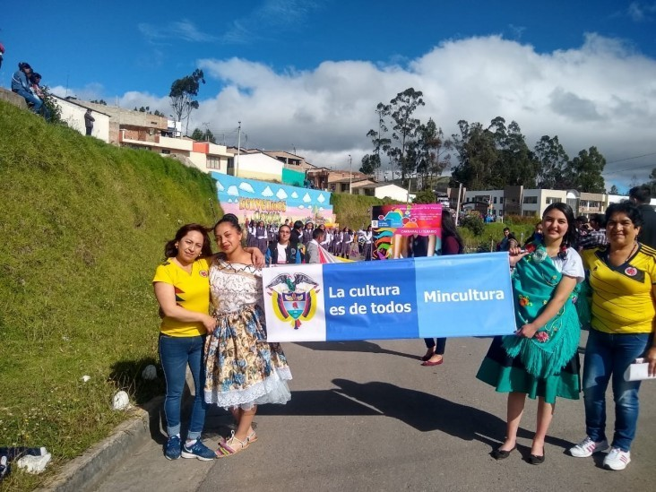
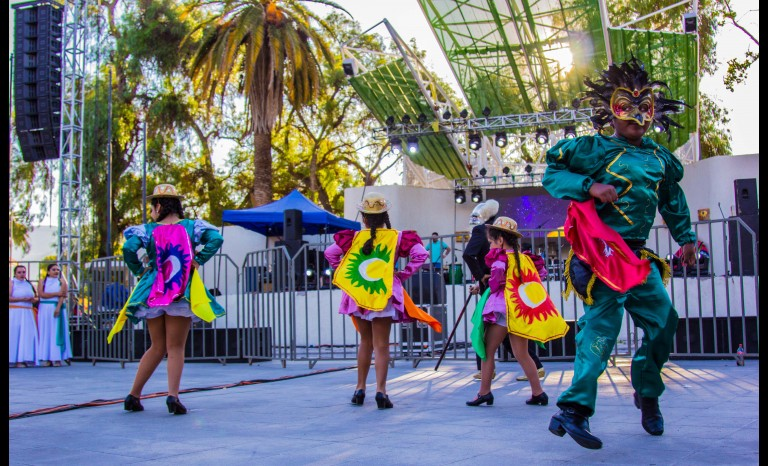
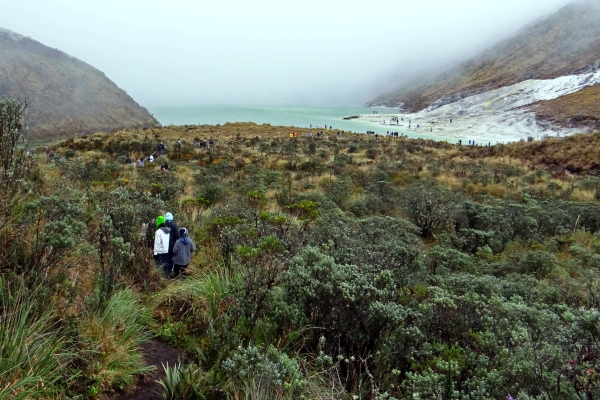
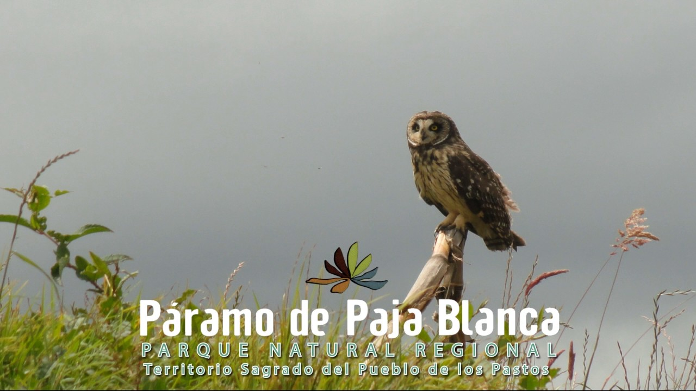
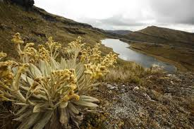
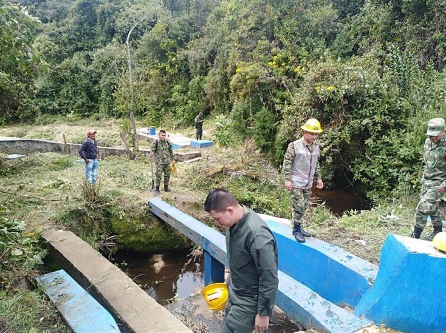

SE INTEGRARON CENTROS TURISTICOS EDUCATIVOS EN OSPINA PARA FORTALECER PROYECTOS CULTURALES


En el desfile del proyecto Cunchila por los caminos de la literatura en el municipio de Ospina, participaron la rectora Mónica Maribel Sánchez, las estudiantes Anyeli Narváez y Daira Pantoja y la coordinadora del proceso Amparo Niño..
Hoy se dio inicio al proyecto educativo que busca fortalecer la formación de niños y adolescentes de los diferentes centros educativos del municipio de Ospina, proyecto que tiene apoyo del Ministerio de Cultura.
Así lo dio a conocer la rectora de la Institución Educativa Cunchila, ubicada en el corregimiento que lleva el mismo nombre, Mónica Maribel Sánchez, quien además explicó que hasta el viernes próximo desarrollarán la programación.
Ayer inició la programación con un desfile por las calles principales del municipio en donde participaron las instituciones educativas de las poblaciones vecinas.
“Cunchila por los caminos de la literatura, es un proyecto que está concertado con el Ministerio de Cultura y financiado por la Administración local en cabeza del alcalde Eduardo Rosero y ejecutado por la Institución Educativa Cunchila”, dijo la rectora.
Agregó que el proyecto tiene como objetivo rescatar los valores culturales, resaltando la parte literaria. Para este año organizaron un desfile y carnaval literario. Hoy inicia la segunda feria del libro con presencia de artistas de la localidad.
La rectora manifestó que fueron invitados los colegios de Túquerres Teresiano y Juan Luis Gonzaga, de Sapuyes Sebastián de Belalcázar, de Guaitarilla María Auxiliadora, de Ospina Francisco de Paula Santander, San Isidro, centros asociados Gavilanes y centro de San Pedro.
.
PARAMO DE PAJA BLANCA



DECLARATORIA DEL “PARQUE NATURAL REGIONAL PÁRAMO DE PAJA BLANCA,TERRITORIO SAGRADO DEL PUEBLO DE LOS PASTOS”, NARIÑO - COLOMBIA.
Hogar de nuestros ancestros,
sustento de la vida y mananti al de
futuras generaciones Una de las estrategias seguidas a nivel mundial para la conservación de la biodiversidad y de los bienes y servicios ecosistemicos, es la declaración de Áreas
Naturales Protegidas, entendidas como superficies de tierra y/o mar especialmente consagradas a la protección y el mantenimiento de la diversidad biológica Páramo de Paja Blanca un ecosistema estratégico para la conservación por la oferta de bienes y servicios que ofrece, en especial la regulación
hídrica el Páramo de Paja Blanca, es uno de los ecosistemas considerados relevantes para ser declarado como área protegida
LIMPIARON FUENTES HIDRICAS EN EL MUNICIPIO DE OSPINA-NARIÑO



En Ospina se llevó a cabo una jornada ambiental con la participación de la comunidad y militares, entre otros.
Limpiaron fuentes hídricas en el municipio de Ospina, Nariño este
Martes
Comunidad, funcionarios y unidades militares se unieron para llevar a cabo la adecuación de la bocatoma del acueducto en el municipio de Ospina.
Así lo dio a conocer el mandatario local, Eduardo Rosero, quien además explicó que el objetivo es garantizar el consumo del agua, puesto que se encontraba llena de hierba y de arbustos.
Agregó que con la participación de la comunidad llegaron hasta la bocatoma Villa del Sur, donde con las unidades militares lograron hacer el mantenimiento.
“El objetivo fue realizar un diagnóstico y encontrar soluciones al problema de contaminación de las principales fuentes hídricas que abastecen a los acueductos veredales y del municipio”, dijo el alcalde.
Así mismo señaló que se realizó una limpieza de la bocatoma y siembra de árboles en la periferia de la bocatoma vereda Villa del Sur, en donde la comunidad recogió toda clase de residuos que había en las orillas de las quebradas.
El mandatario local dio los agradecimientos a los funcionarios, comunidad y dirigentes que participaron en la jornada.
A la campaña ambiental se unieron la Administración local, Secretaría de Agricultura y Medio Ambiente, Corponariño, Policía Nacional, Concejo, Inspección de Policía, Personería, bomberos, juntas administradoras de acueductos, Saneamiento Ambiental y el Ejército.
Los funcionarios manifestaron que organizarán otra actividad para recuperar las fuentes hídricas, por lo que hacen gestiones ante Corponariño para avanzar con la reforestación en diferentes veredas.